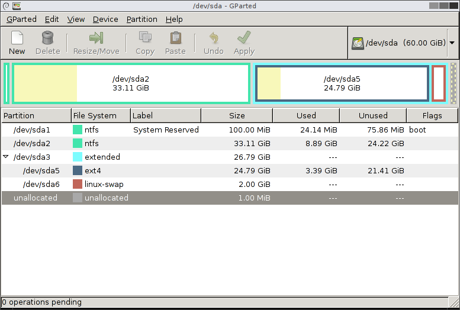

102.1 طراحی چیدمان هارد دیسک
وزن: 2
توضیحات: داوطلبان باید بتوانند یک طرح پارتیشن (Partition) بندی دیسک برای یک سیستم لینوکس طراحی کنند.
حوزه های دانش کلیدی
- سیستم های فایل را تخصیص داده و فضا را به پارتیشن (Partition) ها یا دیسک ها جدا کنید
- طراحی را برای استفاده مورد نظر از سیستم تنظیم کنید
- مطمئن شوید که پارتیشن (Partition)
/bootبا الزامات معماری سخت افزاری برای بوت شدن مطابقت دارد - آشنایی با ویژگی های اساسی LVM
در زیر لیستی جزئی از فایلها، اصطلاحات و ابزارهای استفاده شده آمده است:
- سیستمفایل ریشه
/(root filesystem) - سیستمفایل
/var - سیستمفایل
/home - سیستمفایل
/boot - پارتیشن سیستم EFI (ESP)
- فضای سواپ (Swap space)
- نقاط مانت (Mount points)
- پارتیشنها (Partitions)
اصول
مانند هر سیستم عامل معاصر، لینوکس از files و directories برای کار استفاده می کند. اما بر خلاف Windows از A:، C:، D: و غیره استفاده نمی کند. در لینوکس، همه چیز در *یک درخت بزرگ است که با / شروع می شود (به نام root). هر پارتیشن (Partition)، دیسک، سی دی، یو اس بی، درایو شبکه و ... در جایی در این درخت عظیم قرار می گیرد.
توجه: اکثر دستگاههای خارجی (USB، CD، ...) در
/media/یا/mnt/مانت میشوند.
دایرکتوریهای استاندارد یونیکس (FHS)
این ممکن است لحظه روشنگر شما در سفر لینوکس شما باشد. درک استاندارد سلسلهمراتبی سیستمفایل (Filesystem Hierarchy Standard - FHS) میتواند به شما کمک کند برنامهها، تنظیمات، لاگها و موارد دیگر را بدون اطلاعات قبلی به راحتی پیدا کنید. جدول زیر استاندارد آخرین ویرایش از سال 2015 است:
| دایرکتوری (پوشه) | توضیحات |
|---|---|
bin |
باینریهای دستورات ضروری سیستم (Essential command binaries) |
boot |
فایلهای استاتیک بوتلودر (Static files of the boot loader) |
dev |
فایلهای مربوط به دستگاهها و سختافزارها (Device files) |
etc |
فایلهای پیکربندی و تنظیمات سیستم مخصوص میزبان (Host-specific configuration) |
home |
دایرکتوری خانگی کاربران عادی سیستم (Home directory of the users) |
lib |
کتابخانههای مشترک ضروری و ماژولهای هسته (Shared libraries & kernel modules) |
media |
نقطه مانت برای رسانههای جداشدنی مانند فلش USB (Mount point for removable media) |
mnt |
نقطه اتصال برای مانت موقت سیستمفایلها (Temporarily mounted filesystems) |
opt |
بستههای نرمافزاری کاربردی الحاقی (Add-on application software) |
root |
دایرکتوری خانگی کاربر ریشه / مدیر ارشد (Home directory of root user) |
sbin |
باینریهای ضروری مدیریت سیستم مخصوص ادمین (Essential system binaries) |
srv |
دادههای خدمات و سرویسهای ارائه شده توسط سیستم (Data for services) |
tmp |
فایلهای موقت که معمولاً در هر بوت پاک میشوند (Temporary files) |
usr |
سلسلهمراتب ثانویه شامل برنامههای کاربردی عمومی (Secondary hierarchy) |
var |
دادههای متغیر مانند فایلهای لاگ و دیتابیسها (Variable data / logs) |
پارتیشن (Partition)
در دنیای لینوکس، دستگاهها در /dev/ تعریف میشوند و برای انواع مختلف دیسکها، قراردادهای نامگذاری متفاوتی وجود دارد:
- PATA (منسوخ شده): /dev/hdc
- دیسکهای SATA (Serial ATA) و SCSI: /dev/sda
- دستگاههای SD/emmc و NAND/NOR برهنه: /dev/mmcblk0 و پارتیشن (Partition)های آنها بهعنوان: /dev/mmcblk0p0 در دسترس هستند
- درایوهای NVME: /dev/nvme0 و پارتیشن (Partition)های آنها به صورت: /dev/nvme0n1 در دسترس هستند
شما باید دیسک ها را PARTITION کنید، یعنی قطعات کوچکتر را روی یک دیسک بزرگ ایجاد کنید. اینها بخش های مستقل در درایو اصلی هستند. سیستم عامل اینها را به عنوان دیسک های مستقل می بیند. ما آنها را به این صورت می شناسیم: - /dev/sda1 (اولین پارتیشن (Partition) اولین دیسک SCSI) - /dev/hdb3 (پارتیشن (Partition) سوم روی دیسک دوم)
سیستم های BIOS از MBR استفاده می کردند و می توانستند تا 4 پارتیشن (Partition) روی هر دیسک داشته باشند، اگرچه به جای ایجاد 4 پارتیشن (Partition) Primary، می توانید یک پارتیشن (Partition) Extended ایجاد کنید و پارتیشن (Partition) های منطقی بیشتری را در داخل آن تعریف کنید.
توجه: یک پارتیشن (Partition) Extended فقط یک کادر خالی برای ایجاد پارتیشن (Partition) های منطقی در داخل آن است.
بنابراین:
/dev/sda3سومین پارتیشن (Partition) اصلی روی دیسک اول است/dev/sdb5اولین پارتیشن (Partition) منطقی روی دیسک دوم است/dev/sda7سومین پارتیشن (Partition) منطقی اولین دیسک فیزیکی است.
سیستم های UEFI از جدول پارتیشن (Partition Table) (Partition) GUID (GPT) استفاده می کنند که از 128 پارتیشن (Partition) در هر دستگاه پشتیبانی می کند.
اگر یک پارتیشن (Partition) توسعه یافته را در یک سیستم BIOS تعریف کنید، این پارتیشن (Partition)
/dev/sdx5خواهد بود (1-4 برای اولیه، و اولین توسعه یافته 5 خواهد بود).
سیستم های لینوکس می توانند این پارتیشن (Partition) ها را در مسیرهای مختلف mount کنند. فرض کنید میتوانید یک دیسک جداگانه با یک پارتیشن (Partition) بزرگ برای /home خود و دیگری برای /var/logs/ خود داشته باشید.
# fdisk /dev/sda
Welcome to fdisk (util-linux 2.25.1).
Changes will remain in memory only, until you decide to write them.
Be careful before using the write command.
Command (m for help): p
Disk /dev/sda: 298.1 GiB, 320072933376 bytes, 625142448 sectors
Units: sectors of 1 * 512 = 512 bytes
Sector size (logical/physical): 512 bytes / 512 bytes
I/O size (minimum/optimal): 512 bytes / 512 bytes
Disklabel type: dos
Disk identifier: 0x000beca1
Device Boot Start End Sectors Size Id Type
/dev/sda1 * 2048 43094015 43091968 20.6G 83 Linux
/dev/sda2 43094016 92078390 48984375 23.4G 83 Linux
/dev/sda3 92080126 625141759 533061634 254.2G 5 Extended
/dev/sda5 92080128 107702271 15622144 7.5G 82 Linux swap / Solaris
/dev/sda6 107704320 625141759 517437440 246.8G 83 Linux
جدول پارتیشن (Partition Table) (Partition) GUID (یا GPT) جدیدتر این مشکلات را حل می کند. اگر دیسک خود را با GPT فرمت کنید، می توانید 128 پارتیشن (Partition) اصلی (بدون نیاز به توسعه یافته و منطقی) داشته باشید.
دستورات
ابزار parted
jadi@funlife:~$ sudo parted /dev/sda p
Model: ATA ST320LT000-9VL14 (scsi)
Disk /dev/sda: 320GB
Sector size (logical/physical): 512B/512B
Partition Table: msdos
Disk Flags:
Number Start End Size Type File system Flags
1 1049kB 22.1GB 22.1GB primary ext4 boot
2 22.1GB 47.1GB 25.1GB primary ext4
3 47.1GB 320GB 273GB extended
5 47.1GB 55.1GB 7999MB logical linux-swap(v1)
6 55.1GB 320GB 265GB logical
fdisk
# sudo fdisk /dev/sda
[sudo] password for jadi:
Welcome to fdisk (util-linux 2.25.1).
Changes will remain in memory only, until you decide to write them.
Be careful before using the write command.
Command (m for help): p
Disk /dev/sda: 298.1 GiB, 320072933376 bytes, 625142448 sectors
Units: sectors of 1 * 512 = 512 bytes
Sector size (logical/physical): 512 bytes / 512 bytes
I/O size (minimum/optimal): 512 bytes / 512 bytes
Disklabel type: dos
Disk identifier: 0x000beca1
Device Boot Start End Sectors Size Id Type
/dev/sda1 * 2048 43094015 43091968 20.6G 83 Linux
/dev/sda2 43094016 92078390 48984375 23.4G 83 Linux
/dev/sda3 92080126 625141759 533061634 254.2G 5 Extended
/dev/sda5 92080128 107702271 15622144 7.5G 82 Linux swap / Solaris
/dev/sda6 107704320 625141759 517437440 246.8G 83 Linux
توجه: parted GPT را نمی فهمد
گپارتد
یک ابزار گرافیکی برای مدیریت دیسک ها و پارتیشن (Partition) ها.

LVM
در بسیاری از موارد، شما باید اندازه پارتیشن (Partition) های خود را تغییر دهید یا حتی دیسک های جدیدی را نصب کرده و آنها را به نقاط نصب فعلی خود اضافه کنید. افزایش اندازه کل. LVM برای این کار طراحی شده است.
LVM به شما کمک می کند یک پارتیشن (Partition) از دیسک های مختلف ایجاد کنید و فضا را از/به آنها اضافه یا حذف کنید. مفاهیم اصلی عبارتند از:
- حجم فیزیکی (PV): یک درایو کامل یا یک پارتیشن (Partition). بهتر است پارتیشن (Partition) ها را تعریف کنید و از دیسک های کامل - unpartitioned استفاده نکنید.
- Volume Groups (VG): این مجموعه ای از یک یا چند PVاست. سیستم عامل vg را به عنوان یک دیسک بزرگ می بیند. PV ها در یک VG، می توانند اندازه های متفاوتی داشته باشند یا حتی بر روی دیسک های فیزیکی متفاوت باشند.
- حجم های منطقی (LV): سیستم عامل lvs را به عنوان پارتیشن (Partition) می بیند. می توانید LV را با سیستم عامل خود فرمت کرده و از آن استفاده کنید.
طرح بندی هارد دیسک را طراحی کنید
چیدمان دیسک و تخصیص پارتیشنها به دایرکتوریها به نوع کاربری شما بستگی دارد. ابتدا درباره swap و boot صحبت میکنیم و سپس ۳ سناریوی مختلف را بررسی خواهیم کرد.
حافظه سواپ (Swap)
فضای Swap در لینوکس مانند یک حافظه مجازی توسعهیافته برای RAM عمل میکند. زمانی که حافظه اصلی پر شود، کرنل صفحات حافظه (Pages) را به این پارتیشن یا فایل منتقل میکند. کافی است یک پارتیشن را با سیستمفایل swap فرمت کرده و در فایل /etc/fstab تعریف کنید (این مبحث را در فصلهای ۱۰۴ خواهیم دید).
توجه: هیچ فرمول قطعی و ثابتی برای اندازه Swap وجود ندارد. در گذشته میگفتند «دو برابر رم ولی نه بیشتر از ۸ گیگابایت». در سیستمهای امروزی مجهز به NVMe/SSD، بسته به کاربری پیشنهاد میشود «اندازه RAM + ۲ گیگابایت» (جهت فعالسازی قابلیت هایبرنیت) یا حتی در سیستمهای با رم بالا مقادیر کمتر.
پارتیشن /boot
سیستمهای قدیمیتر لینوکس نمیتوانستند دیسکهای حجیم (مثلاً ترابایتی) را در حین راهاندازی مدیریت کنند، بنابراین پارتیشن /boot جدا میشد. این جداسازی همچنین در زمان ریکاوری و بازیابی سیستمهای خراب بسیار کارآمد است. حتی میتوانید پارتیشن /boot را به صورت فقطخواندنی (Read-Only) قرار دهید. در اغلب موارد داشتن یک فضای ۱۰۰ تا ۵۰۰ مگابایتی برای /boot کاملاً کافی است. این پارتیشن میتواند روی یک دیسک مجزا یا یک پارتیشن مستقل قرار گیرد.
این پارتیشن باید در زمان راهاندازی سیستم، توسط BIOS/UEFI قابل دسترس باشد (بدون نیاز به شبکه).
در سیستمهای UEFI، یک نقطه مانت با آدرس /boot/efi به نام «پارتیشن سیستم EFI» یا ESP وجود دارد. این پارتیشن حاوی بوتلودر و کرنل بوده و باید توسط سفتافزار (Firmware) سیستم در هنگام بوت خوانده شود.
مورد اول: کامپیوتر رومیزی (Desktop)
در یک کامپیوتر رومیزی، معمولاً کافی است که یک پارتیشن سواپ (Swap)، یک پارتیشن /boot داشته باشید و تمام فضای باقیمانده را به سیستمفایل ریشه / (root) اختصاص دهید.
مورد دوم: ایستگاه کاری تحت شبکه (Network Workstation)
مانند هر سیستم دیگری /boot باید محلی باشد (یک دیسک فیزیکی متصل به دستگاه) و در اکثر مواقع / (ریشه) نیز محلی است. اما در ایستگاههای کاری سازمانی، دایرکتوری خانگی /home را میتوان از طریق شبکه (پروتکلهای NFS، SMB، SSHFS و...) مانت کرد. این کار باعث میشود کاربران پشت هر سیستمی بنشینند و لاگین کنند، به فایلهای دایرکتوری خانگی خود در سرور مرکزی دسترسی داشته باشند. فضای Swap نیز بسته به شرایط میتواند محلی یا تحت شبکه باشد.
مورد سوم: سرورها (Server)
در سرورها معمولاً /boot محلی است و دایرکتوری /home بسته به کاربری میتواند محلی یا شبکهای باشد. در اکثر سرورها دایرکتوری /var را در یک پارتیشن یا دیسک جداگانه قرار میدهیم؛ زیرا فایلهای لاگ، پایگاهداده و ایمیلها مداوم در حال رشد هستند و اگر دیسک پر شود، نباید مانع کارکرد کل سیستمعامل شود. حتی میتوان آن را روی دیسکهای RAID قرار داد تا خطر از دست رفتن دادهها به صفر برسد. برخی مدیران سیستم همچنین دایرکتوری /usr را جداگانه مانت کرده و آن را فقطخواندنی (Read-Only) میکنند تا امنیت سیستم افزایش یابد.
بخش تکمیلی: آشنایی با zram
روشهای مختلفی برای ایجاد فضای swap وجود دارد:
- دبیان ۱۱: معمولاً از پارتیشن اختصاصی Swap استفاده میکند.
- اوبونتو ۲۲.۰۴: از فایل سواپ (swapfile) استفاده میکند.
- فدورا ۳۶+: از ماژول zram استفاده میکند.
به طور خلاصه، zram یک فضای ذخیرهسازی مجازی فشردهشده درون حافظه RAM ایجاد میکند که میتواند به عنوان یک فضای سواپ فوقالعاده پرسرعت به کار گرفته شود یا برای پوشههای موقت مانند /tmp مانت گردد.